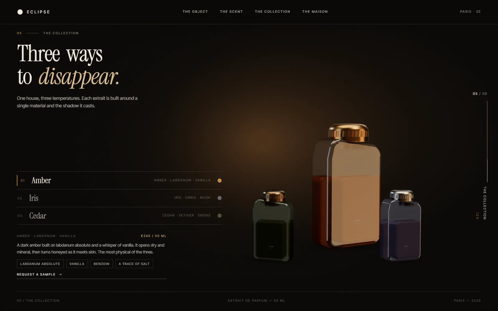
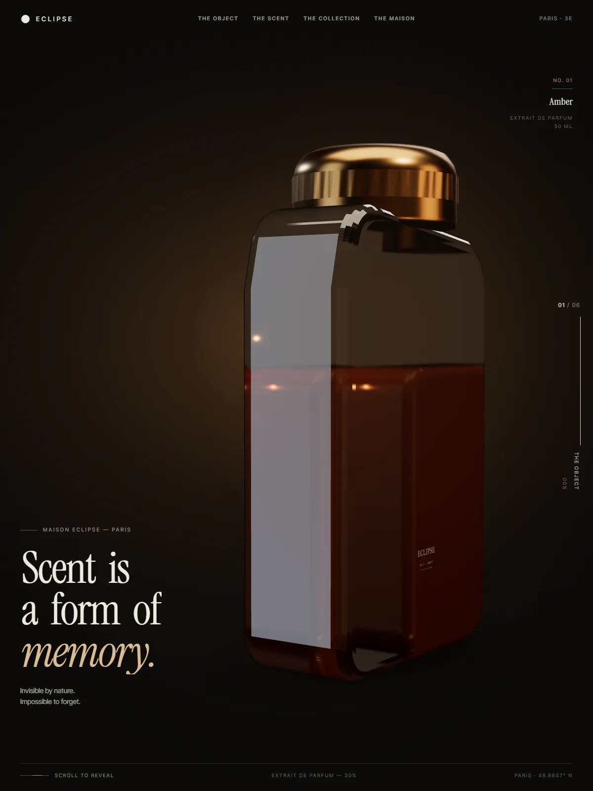
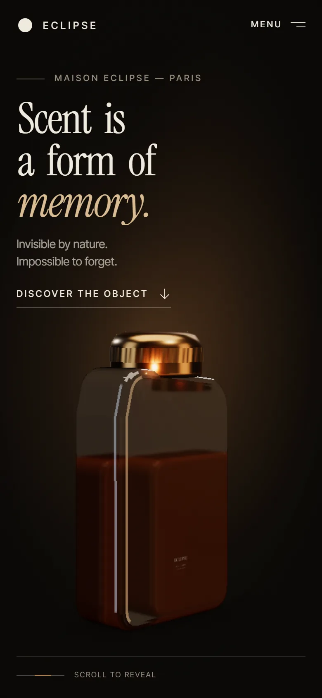
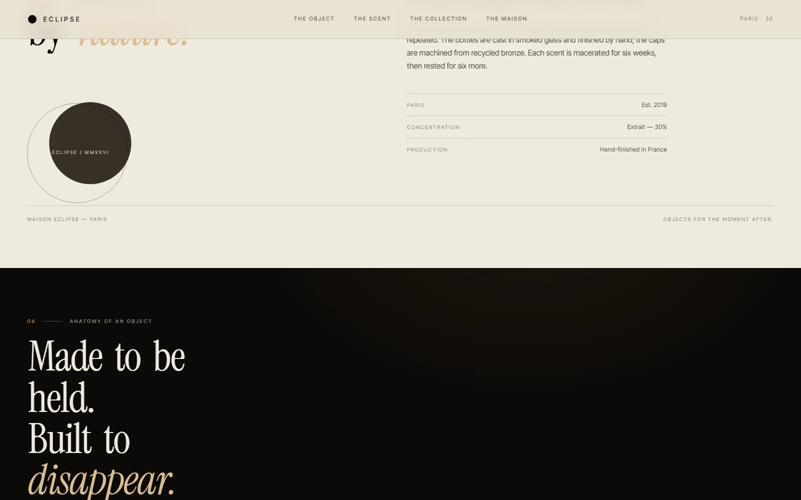

Eclipse Maison
Интерактивный сайт вымышленного парижского парфюмерного дома: флакон разбирается по мере скролла.

Задача
Собрать digital-витрину для парфюмерного дома, где продукт раскрывается не карточкой, а сценой: свет, стекло и металл. Сайт должен ощущаться как объект, а не как каталог.
Флакон как рассказчик
Модель флакона рендерится в реальном времени и разбирается на части при скролле. Камеры и свет привязаны к главам; коллекция из трёх ароматов и нотные образцы живут в той же сцене.
Типографика — Instrument Serif для голоса дома и Inter Tight для интерфейса. Палитра: дымчатое стекло, янтарь, латунь и почти чёрный фон.
«Аромат невидим. Поэтому его пришлось сделать осязаемым.»



Mobile / 390 × 844
Что внутри
- Real-time 3D-флакон и нотные образцы на React Three Fiber.
- Шесть глав: объект, аромат, коллекция, дом, финал.
- Scroll-driven разбор флакона и смена света.
- Самохостинг шрифтов, reduced motion, аккуратная деградация без WebGL.
- Форма письма сохраняет адрес только в localStorage.

Границы
Границы демоДом, ароматы, адреса и переписка вымышлены. Это дизайн-исследование, а не коммерческий запуск; данные формы не покидают браузер.